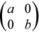

Intel® oneAPI Math Kernel Library Developer Reference - Fortran
Computes generalized Schur factorization for a pair of matrices.
call sgges3 (jobvsl, jobvsr, sort, selctg, n, a, lda, b, ldb, sdim, alphar, alphai, beta, vsl, ldvsl, vsr, ldvsr, work, lwork, bwork, info )
call dgges3 (jobvsl, jobvsr, sort, selctg, n, a, lda, b, ldb, sdim, alphar, alphai, beta, vsl, ldvsl, vsr, ldvsr, work, lwork, bwork, info )
call cgges3 (jobvsl, jobvsr, sort, selctg, n, a, lda, b, ldb, sdim, alpha, beta, vsl, ldvsl, vsr, ldvsr, work, lwork, rwork, bwork, info )
call zgges3 (jobvsl, jobvsr, sort, selctg, n, a, lda, b, ldb, sdim, alpha, beta, vsl, ldvsl, vsr, ldvsr, work, lwork, rwork, bwork, info )
For a pair of n-by-n real or complex nonsymmetric matrices (A,B), ?gges3 computes the generalized eigenvalues, the generalized real or complex Schur form (S,T), and optionally the left or right matrices of Schur vectors (VSL and VSR). This gives the generalized Schur factorization
(A,B) = ( (VSL)*S*(VSR)T, (VSL)*T*(VSR)T ) for real (A,B)
or
(A,B) = ( (VSL)*S*(VSR)H, (VSL)*T*(VSR)H ) for complex (A,B)
where (VSR)H is the conjugate-transpose of VSR.
Optionally, it also orders the eigenvalues so that a selected cluster of eigenvalues appears in the leading diagonal blocks of the upper quasi-triangular matrix S and the upper triangular matrix T. The leading columns of VSL and VSR then form an orthonormal basis for the corresponding left and right eigenspaces (deflating subspaces).
If only the generalized eigenvalues are needed, use the driver ?ggev instead, which is faster.
A generalized eigenvalue for a pair of matrices (A,B) is a scalar w or a ratio alpha/beta = w, such that A - w*B is singular. It is usually represented as the pair (alpha,beta), as there is a reasonable interpretation for beta=0 or both being zero.
For real flavors:
A pair of matrices (S,T) is in generalized real Schur form if T is upper triangular with non-negative diagonal and S is block upper triangular with 1-by-1 and 2-by-2 blocks. 1-by-1 blocks correspond to real generalized eigenvalues, while 2-by-2 blocks of S will be "standardized" by making the corresponding elements of T have the form:

and the pair of corresponding 2-by-2 blocks in S and T have a complex conjugate pair of generalized eigenvalues.
For complex flavors:
A pair of matrices (S,T) is in generalized complex Schur form if S and T are upper triangular and, in addition, the diagonal elements of T are non-negative real numbers.
CHARACTER*1. = 'N': do not compute the left Schur vectors;
CHARACTER*1. = 'N': do not compute the right Schur vectors;
= 'V': compute the right Schur vectors.
CHARACTER*1. Specifies whether or not to order the eigenvalues on the diagonal of the generalized Schur form.
= 'N': Eigenvalues are not ordered;
= 'S': Eigenvalues are ordered (see selctg).
LOGICAL. selctg is a function of three arguments for real flavors or two arguments for complex flavors. selctg must be declared EXTERNAL in the calling subroutine. If sort = 'N', selctg is not referenced. If sort = 'S', selctg is used to select eigenvalues to sort to the top left of the Schur form.
For real flavors:
An eigenvalue (alphar(j) + alphai(j))/beta(j) is selected if selctg(alphar(j),alphai(j),beta(j)) is true. In other words, if either one of a complex conjugate pair of eigenvalues is selected, then both complex eigenvalues are selected.
Note that in the ill-conditioned case, a selected complex eigenvalue may no longer satisfy selctg(alphar(j),alphai(j), beta(j)) = .TRUE. after ordering. info is to be set to n+2 in this case.
For complex flavors:
An eigenvalue alpha(j)/beta(j) is selected if selctg(alpha(j),beta(j)) is true.
Note that a selected complex eigenvalue may no longer satisfy selctg(alpha(j),beta(j))= .TRUE. after ordering, since ordering may change the value of complex eigenvalues (especially if the eigenvalue is ill-conditioned), in this case info is set to n + 2 (See info below)..
INTEGER. The order of the matrices A, B, VSL, and VSR. n≥ 0.
REAL for sgges3
DOUBLE PRECISION for dgges3
COMPLEX for cgges3
DOUBLE COMPLEX for zgges3
Array, size (lda, n). On entry, the first of the pair of matrices.
INTEGER. The leading dimension of a. lda≥ max(1,n).
REAL for sgges3
DOUBLE PRECISION for dgges3
COMPLEX for cgges3
DOUBLE COMPLEX for zgges3
Array, size (ldb, n). On entry, the second of the pair of matrices.
INTEGER. The leading dimension of b. ldb≥ max(1,n).
INTEGER. The leading dimension of the matrix VSL. ldvsl≥ 1, and if jobvsl = 'V', ldvsl≥ n.
INTEGER. The leading dimension of the matrix VSR. ldvsr≥ 1, and if jobvsr = 'V', ldvsr≥ n.
INTEGER. The size of the array work. If lwork = -1, then a workspace query is assumed; the routine only calculates the optimal size of the work array, returns this value as the first entry of the work array, and no error message related to lwork is issued by xerbla.
REAL for sgges3
DOUBLE PRECISION for dgges3
COMPLEX for cgges3
DOUBLE COMPLEX for zgges3
Array, size (MAX(1,lwork)).
On exit, if info = 0, work(1) returns the optimal lwork.
REAL for cgges3
DOUBLE PRECISION for zgges3
Array, size (8*n).
LOGICAL. Array, size (n). Not referenced if sort = 'N'.
a |
On exit, a is overwritten by its generalized Schur form S. |
b |
On exit, b is overwritten by its generalized Schur form T. |
sdim |
INTEGER. If sort = 'N', sdim = 0. If sort = 'S', sdim = number of eigenvalues (after sorting) for which selctg is true. |
alpha |
COMPLEX for cgges3 DOUBLE COMPLEX for zgges3 Array, size (n). |
alphar |
REAL for sgges3 DOUBLE PRECISION for dgges3 Array, size (n). |
alphai |
REAL for sgges3 DOUBLE PRECISION for dgges3 Array, size (n). |
beta |
REAL for sgges3 DOUBLE PRECISION for dgges3 COMPLEX for cgges3 DOUBLE COMPLEX for zgges3 Array, size (n). For real flavors: On exit, (alphar(j) + alphai(j)*i)/beta(j), j=1,...,n, are the generalized eigenvalues. alphar(j) + alphai(j)*i, and beta(j),j=1,...,n are the diagonals of the complex Schur form (S,T) that would result if the 2-by-2 diagonal blocks of the real Schur form of (a,b) were further reduced to triangular form using 2-by-2 complex unitary transformations. If alphai(j) is zero, then the j-th eigenvalue is real; if positive, then the j-th and (j+1)-st eigenvalues are a complex conjugate pair, with alphai(j + 1) negative. Note: the quotients alphar(j)/beta(j) and alphai(j)/beta(j) can easily over- or underflow, and beta(j) might even be zero. Thus, you should avoid computing the ratio alpha/beta by simply dividing alpha by beta. However, alphar and alphai is always less than and usually comparable with norm(a) in magnitude, and beta is always less than and usually comparable with norm(b). For complex flavors: On exit, alpha(j)(j)/beta(j), j=1,...,n, are the generalized eigenvalues. alpha(j), j=1,...,n and beta(j), j=1,...,n are the diagonals of the complex Schur form (a,b) output by ?gges3. The beta(j) is non-negative real. Note: the quotient alpha(j)/beta(j) can easily over- or underflow, and beta(j) might even be zero. Thus, you should avoid computing the ratio alpha/beta by simply dividing alpha by beta. However, alpha is always less than and usually comparable with norm(a) in magnitude, and beta is always less than and usually comparable with norm(b). |
vsl |
REAL for sgges3 DOUBLE PRECISION for dgges3 COMPLEX for cgges3 DOUBLE COMPLEX for zgges3 Array, size (ldvsl, n). If jobvsl = 'V', vsl contains the left Schur vectors. Not referenced if jobvsl = 'N'. |
vsr |
REAL for sgges3 DOUBLE PRECISION for dgges3 COMPLEX for cgges3 DOUBLE COMPLEX for zgges3 Array, size (ldvsr, n). If jobvsr = 'V', vsr contains the right Schur vectors. Not referenced if jobvsr = 'N'. |
info |
INTEGER. = 0: successful exit < 0: if info = -i, the i-th argument had an illegal value. =1,...,n:
> n:
|